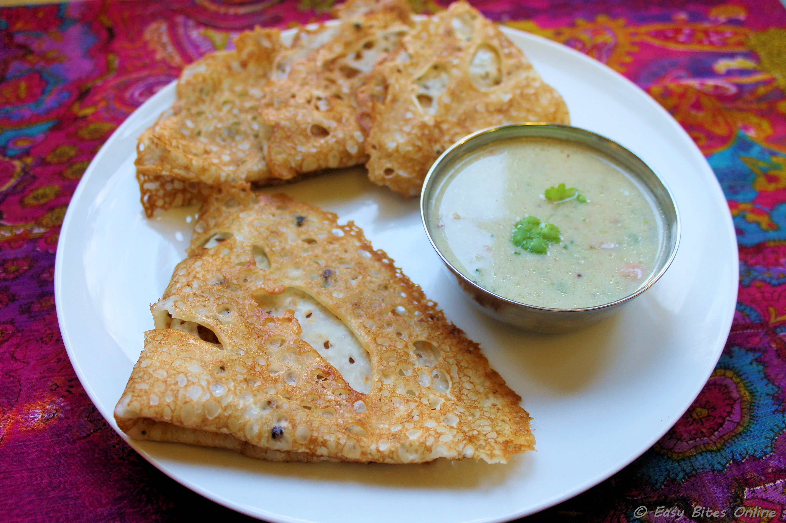

Semolina (Rava) - 1 cup
Rice Flour - 1/2 cup
All Purpose Flour (Maida)- 2 tbsp
Buttermilk (or Curd) - 1 cup
Onion - 1 (finely chopped - optional)
Cumin seeds - 1/4 tsp
Crushed peppercorns - 1/4 tsp
Green Chili - 1 (finely chopped)
Ginger - 1 " (grated)
Cilantro - 2-3 strands (finely chopped)
Curry leaves - 1 strand (finely chopped)
Salt - as needed
Sesame oil or Ghee - for making dosa
Cashews
Mustard seeds
Mix the rava, rice flour, maida and required salt in a big bowl.
Add the sour curd (or buttermilk) and mix it well without any lumps. Add required water to make a batter thinner than normal dosa batter.
Add finely chopped onions, green chili, cilantro, curry leaves, grated ginger, cumin seeds and crushed peppercorns to the batter.(Note :- If you do not enjoy onions, do not add it. My mother in law likes to pop some mustard seeds in some oil and add it to the batter. Also some small pieces of cashews can be added to add some crunch.)
Let the batter rest for 10-15 minutes. Just before making each dosa, mix the batter once.
Heat a non stick dosa pan on medium high heat.
Take a ladle full of batter and spread the batter from the outer side of the pan. (unlike the normal dosa which you spread from the inside out.)
Pour few drops of oil on top and let it cook for 4-5 minutes on one side. You will see the edges lifting off the pan.
You do not really have to flip the dosa and cook. Gently remove the dosa when the bottom turns golden brown. Rava dosa is ready to be served.